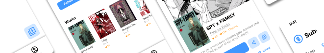
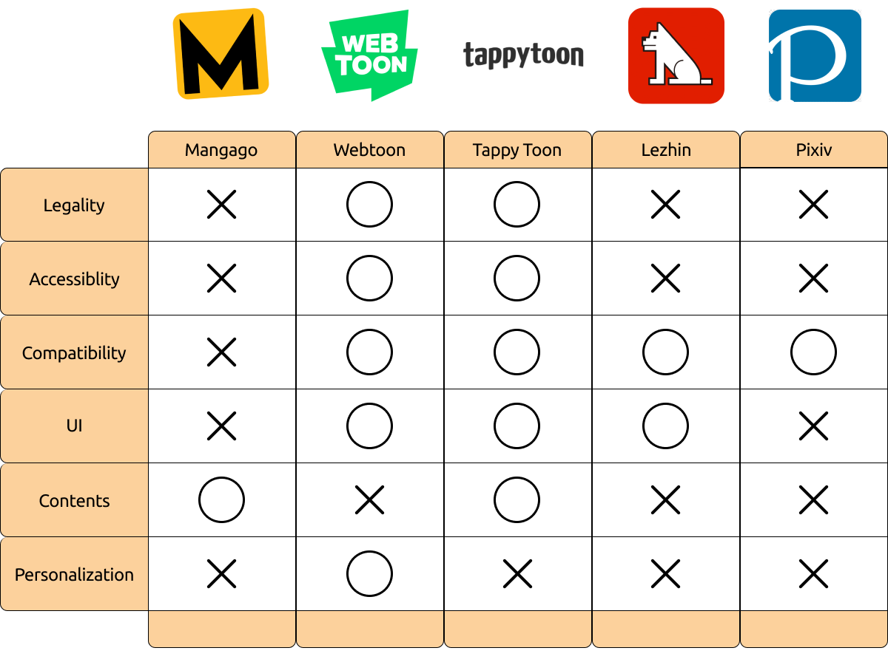
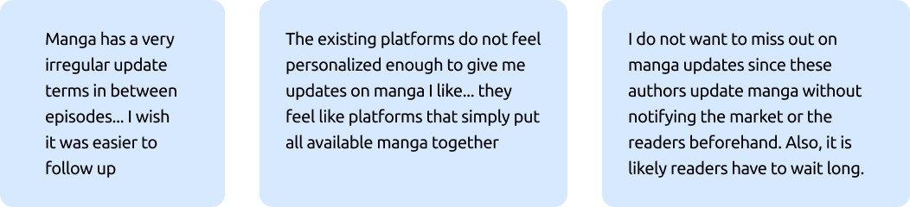
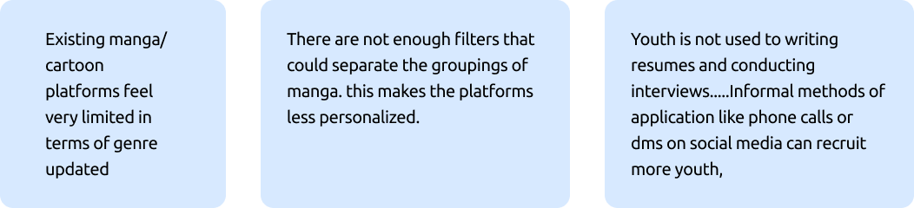
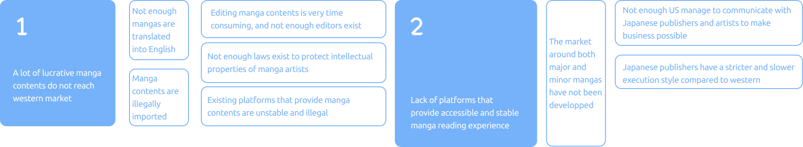
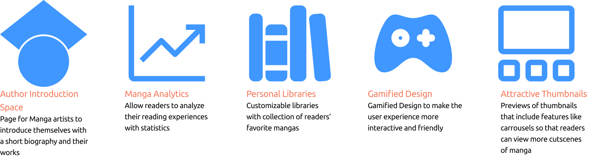
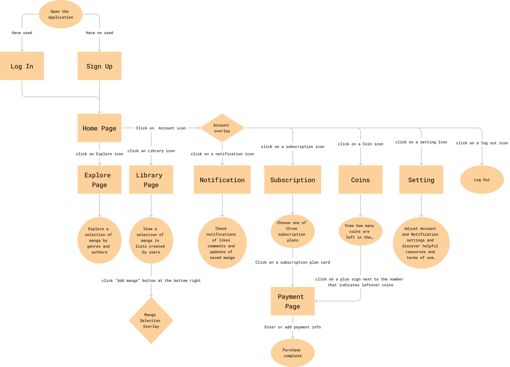
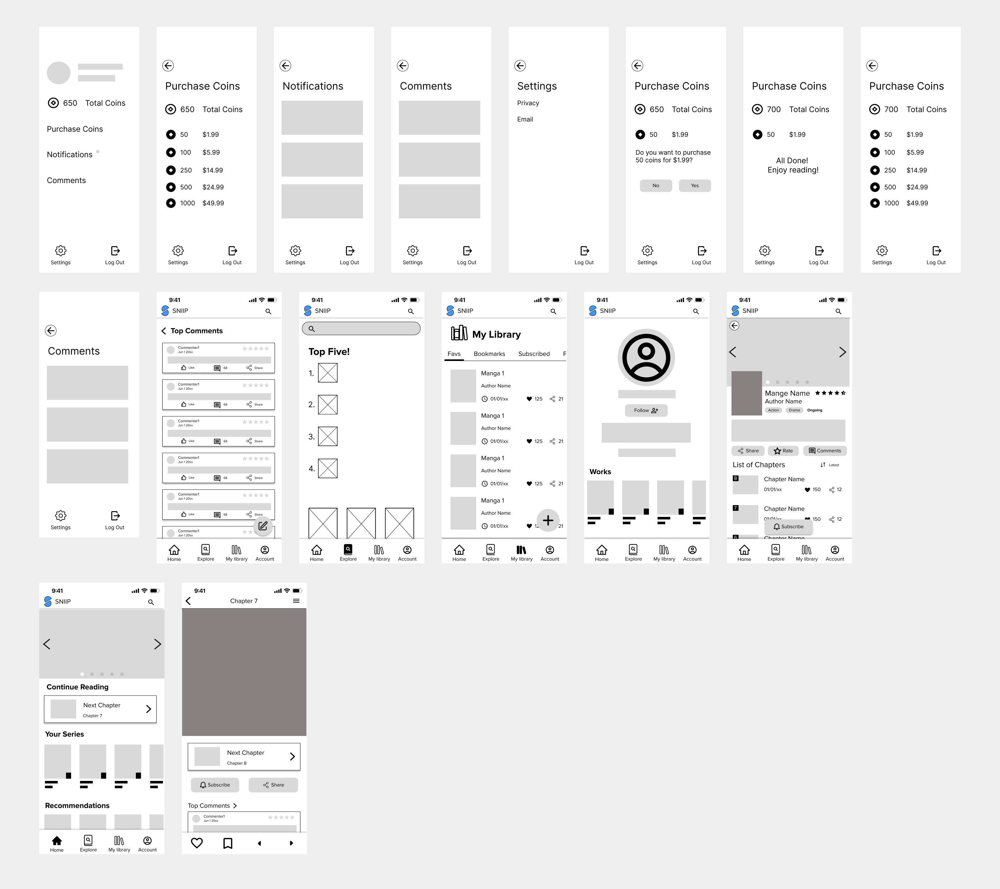

SNIIP
Ideation / UI/UX Design / UX Research
SNIIP, an Entertainment Startup, developed a mobile platform enhancing manga reading for Western audiences. With $2000 in funding, the platform aimed to provide a superior experience compared to competitors, focusing on accessibility and diverse manga content not readily available in Western markets. The redesign from a desktop version aimed to cater to readers on their phones, addressing limitations in streaming services and legal complexities.
Methods
Tools
Final Solution
Mobile Manga Platform
Introducing SNIIP, a personalized, faster, and accessible manga platform.
Formal Research
Competitive Research

Existing platforms faces critical issues
Existing platforms faces critical issues
- Illegal distribution without consent from authors.
- Nonstop crashes in the service.
- Changing IP addresses
- Intrusive ads making users leave while reading
Primary Research
Semi Structured Interviews, Surveys
Utilizing Zoom interviews and Google surveys, our primary research focused on understanding the preferences and experiences of manga readers in college, both online and offline.
Additionally manga publishers were interviewed
Data Visualization
Insights
Main Insights from Interviews
Through extensive interviews, we gained valuable insights into the challenges and pain points experienced by current manga enthusiasts using mobile and desktop platforms.
1. Demand for a distraction-free and accessible manga search and viewing platform.
2. Users seek a stable manga platform resilient to legal and online stability issues.
3. Users desire free access to manga chapters without individual episode payments.

4. Users seek personalized manga selection based on their interests. 
Defining Scope
Narrowing the Problem Space
Having identified user pain points, our team expanded the scope to delve into the root causes. This broader investigation revealed that the issues stemmed from the following underlying problems.
1. Many lucrative manga contents remain untapped in the Western market.
2. Limited platforms for accessible and stable manga reading.
How Can We Questions
Top Three Questions
For SNIIP, we focused on three key questions: boosting interactions, streamlining manga selection, and creating a customizable environment for optimal user experience.
1. How can users feel their interactions with the authors and their access to the manga trustworthy?
2. How might we minimized user effort in searching for manga?
3. How might we allow users to customize the app according to their preferences of manga?
Synthesizing 1)
Stakeholder Mapping
In the synthesis phase, we identified primary users as readers seeking personalization and Western users interested in understanding Japanese manga.
Synthesizing 2)
Personas
Two persona were crafted for our product: a manga publisher/artist and a manga enthusiast, symbolizing authors and readers, approach to attracting both avid readers and creators seeking enhanced exposure for their works.
Brainstorming: Crazy 8
Possible Ideas
In a team brainstorm, we chose "Gamification design," "Author introduction space," and "Personal library" to achieve our goal of an Interactive, Accessible, and Personalized manga experience.
Reasons
Why this Decision?
We're differentiating our platform with interactive and personalized features. Choices like gamified design, author pages, and customizable libraries induce continuous engagement of viewers from one page to another.
Requirements Planning
Functionalities
Before designing, we outlined functionalities on a Google Sheet. Intuitive animation planning streamlined team efforts, prioritizing flexibility.

Mapping
User Flow
Beyond functionality, we devised a User Flow map with icons and diverse in our prototypes—crucial for a functional end product.
Architecture
Information Architecture
The team begun building an information architecture for our mobile product so that we could recollect what decisions we have made while brainstorming and affinity diagraming.

Rapid Prototyping
Low-Fidelity Prototype: Sketches
For the initial prototypes, our designers exchanged each one's strongest sketches, combining the best assets to create an enhanced version.
Wireframing
Low-Fidelity Prototype: Combination

User Test #1
User Test: Contextual-Inquiries
For the user testing process, we were able to set up zoom calls with users who have been reading manga on competitor websites to evaluate the designs on the low fidelity prototype. The contextual inquires we conducted offered us insights as to what functions can make our platform more user centric by understanding micro-pain points individuals experienced on competitor platforms such as: complex searching method, unorganized libraries, and etc.
Test Results

Solutions

Implementations

User Test #2
Mid Fidelity Prototype User Test: Wizard of Oz, Think Aloud
For the second round of user tests, we were able re-evaluate a more developed version of low fidelity prototype through wizard of oz technique where we had participants go through our mock interface in a figma prototype. While doing so, the users were ask to present their thoughts verbally such as "I am clicking on this icon," "Now I am on this page I will click this arrow to see....," and etc.

Test Results

Solutions

Implementations

Design System
Fonts and Colors
For the design system, we tried orange and organelle as the main colors for the design since these colors satisfied our criteria for having a both professional and playful vibe within the platform so that young stakeholders both feel the credibility of our system and feel more familiarity with their possibly first time working independently for the career paths of their interests. We also added geometrical designs that took inspiration from organic curves and shaped to decrease excessive sharpness in the presentation again to focus on the younger audience.

Break Downs
Final Designs
Pick Genres
The onboarding process allows users to pick their favorite genres for the application to autonomously suggest manga according to users' preferences in home page.
Personal Library
Users can add or delete manga they select in their libraries. Multiple libraries can be created up to the users' choice of categorizing various manga.
Initial

Final(After Change)

Reading and Author Exploration
Users are able to learn more about authors who produced manga they like from author page that introduces author's other manga available in the application. Users can leave comments at the end of each episode of a manga to express their views and thoughts on the stories
Browsing Manga
The app exposed users to many manga in different filters such as rankings in each genre, autonomously chosen manga to users' taste, top selection of most viewed and trending manga on a daily and weekly basis.
Reflections
difficulties
Since this was entirely a remote internship, all communications and work sessions were carried out remotely. Also, with teammates from different parts of hte country and the world, we had to coordinate our time to find the time where we could meet despite differences in our time zones. It was difficult to intuitively communicate with the teammates when we were attempting to make changes in our initial UX decisions. We overcame this problem by actively using communication Saas tool and holding weekly meeting for the design and the general team meeting with the developers.
Next steps
Making desktop changes
After coding out the mobile platform product for the company, I was able to transfer my design to a desktop platform. This was an attempt to increase the access of the service to the general audience. As a result, we were able to improve our old desktop platform with a newly thought out Ux methods. We were also able to make coherent designs across our mobile and desktop platforms.